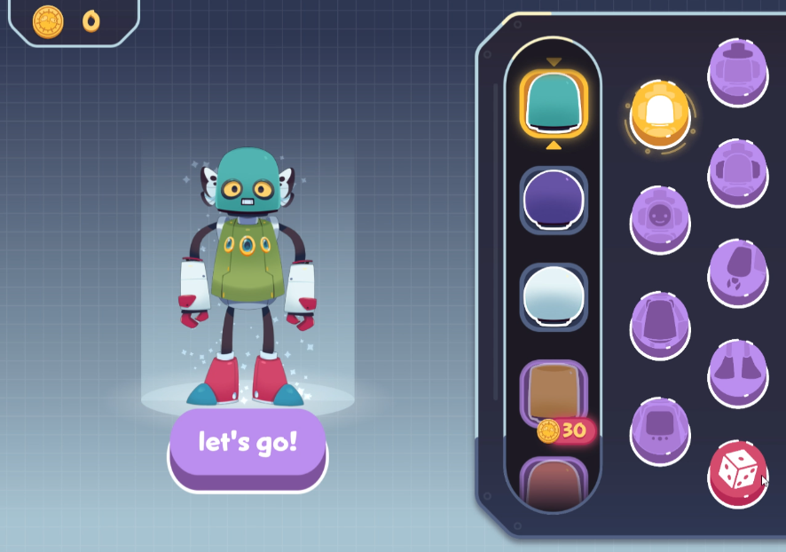
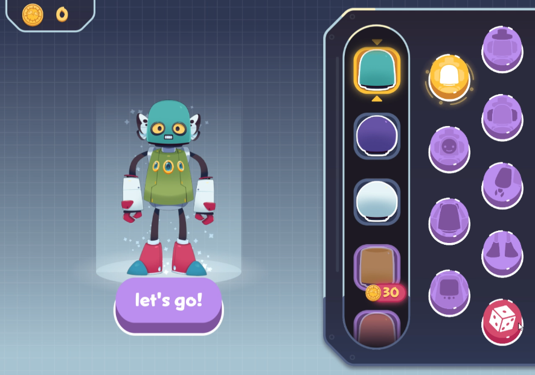

An Otter Planet: Proof of Concept
2023 / Game Designer
Proof of concept in collaboration with Habitatique and the Learning Games Network.
The goals of the game included: understanding the complexity of ecosystems, show the player that all things are connected to each other and diversity of our flora and fauna will be our first line of defense in the fight against climate change.
The inspiration planet served as the main feature of the game that surfaces lots of hidden relationships, teaching the player how these creatures interact with their environment and their needs to thrive. Using hex grid puzzle gameplay, the player was tasked with a description of the creature they were researching and descriptions of traits a creature may have. The player would place trait puzzles into a larger shape of the creature in order to connect what traits the creature possessed to contribute to its environment.
Shipped on PC via itch.io.


 
